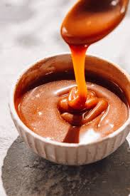

Home
Caramel Sauce

Description
This Caramel Sauce Recipe is rich, creamy, buttery, sweet and 1,000X better
than any store bought caramel sauce! This easy Caramel Sauce recipe is FOOL
PROOF, ready in 5 MINUTES and lick-the-spoon delicious!
Ingredients
- 3/4 cup unsalted butter
- 1 1/2 cups light brown sugar, packed
- 2 tablespoons water
- 1/4 teaspoon salt
- 1/2 cup evaporated milk plus more as needed
depending on desired consistency
- 1 tablespoon vanilla extract
Directions
- Add butter, brown sugar, water, and salt to medium
saucepan and heat over medium-low heat, stirring
until butter melts.
- Bring to a boil then reduce to a vigorous simmer,
whisking constantly until thickened, approximately
5-7 minutes. Keep in mind, the caramel sauce will
thickens more as it cools. (If the caramel sauce still
looks thin after you remove it from the heat, then
return to a simmer.)
- Remove from heat and stir in 1/2 cup evaporated
milk (it will bubble a lot) and vanilla. Add additional
evaporated milk to reach desired consistency.